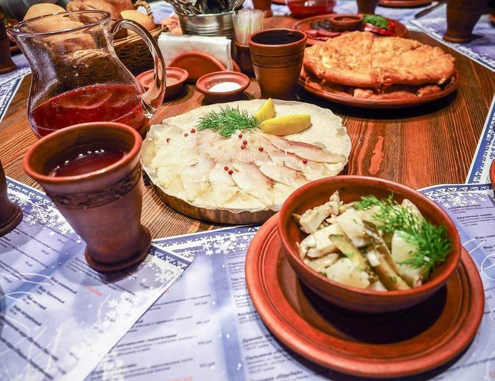

Национальные блюда ненцев.
Главная
Численность и расселение
Язык
Занятия и быт
Жилище
Религия
Традиции
Одежда
Национальные праздники
Национальные блюда
Национальные блюда ненцев
Кулинарные традиции ненцев основаны на использовании мяса оленя, рыбы и ягод. Основные блюда включают:
Борщ
— суп на основе корней и мяса.
Пельмени
— из оленины.
Сушёное и вяленое мясо
— популярные закуски.
В качестве напитка ненцы предпочитают
чай
или
квас
из ягод.
